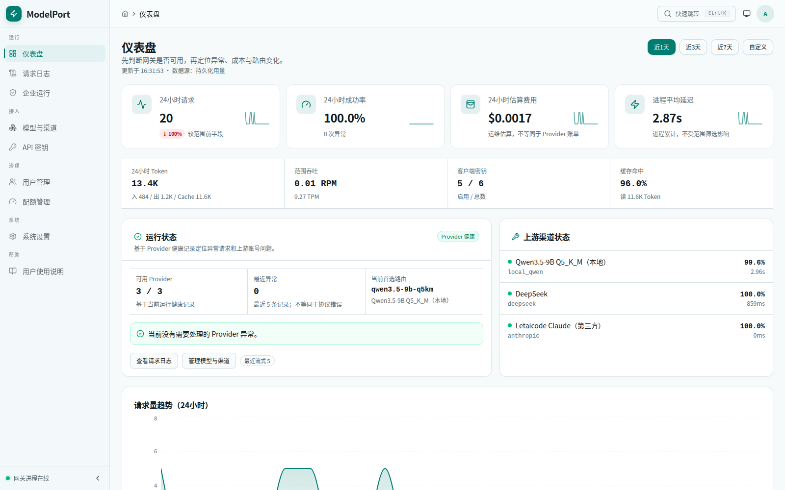
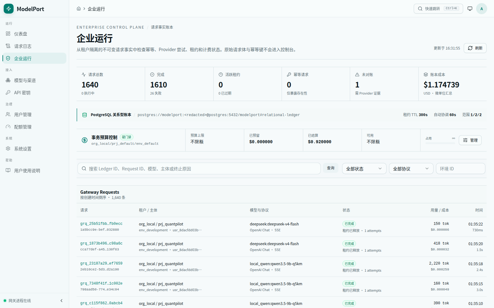
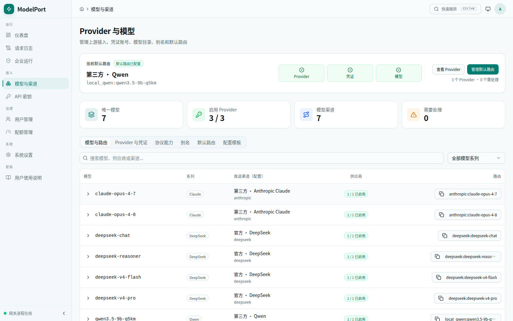

模型接得越多，业务越不该感知 Provider 差异
客户端协议、模型命名、Tool Use、流式事件、鉴权、限流和 usage 口径都可能不同。若每个应用直接连接 Provider，这些差异会扩散到业务代码，也很难统一回答“谁在何时、通过哪条路由、花了多少预算”。
一个面向可信主机与小型网络的自托管多协议模型网关。它让 Anthropic Messages 与 OpenAI Chat 客户端共用同一套鉴权、策略、预算、路由和观测链路，再把请求安全地交给 Anthropic-compatible、OpenAI-compatible 或本地模型 Provider。

客户端协议、模型命名、Tool Use、流式事件、鉴权、限流和 usage 口径都可能不同。若每个应用直接连接 Provider，这些差异会扩散到业务代码，也很难统一回答“谁在何时、通过哪条路由、花了多少预算”。
我独立完成 Rust 数据面、React 控制面、PostgreSQL 请求/尝试账本及部署验收。核心不是再包一层转发，而是为协议解析、策略检查、Provider 尝试、流式终态和预算结算建立清晰边界。


截图来自当前本地实例；页面中的 Provider、请求与费用均为实际运行数据，敏感凭证和原始请求内容不会出现在案例页。
/v1/messages 与有明确范围的 /v1/chat/completions 共用治理链路，同时提供模型目录和精确 token counting。
文本角色、function tools、Tool Call、结束原因、usage 与流式终态先进入协议中立结构；不支持的语义显式拒绝。
按显式 Provider、别名、精确模型、前缀和默认路由解析，只对可接收模型的 Provider 执行有边界 fallback。
API Key 绑定用户与租户作用域，叠加模型、Provider、IP、配额和滚动费用策略；PostgreSQL 在出站前原子预留预算。
SSE permit 持有到 body 完成、失败或取消；终态统一结算健康、延迟、usage 与日志，不在首个 HTTP 200 时提前判定成功。
Dashboard 覆盖用户、Key、配额、Provider、模型、审计和账本；同时提供配置校验、诊断、备份恢复、Docker 与 systemd 路径。
Claude Code、OpenAI SDK 或 API 客户端进入各自协议边界，先完成大小限制、鉴权、参数校验和 request ID 分配。
请求解析为强类型 Exchange IR，再执行租户、API Key、模型、Provider、IP、配额、能力和预算检查。
确定性路由选择凭证和 Provider；每次真实出站尝试独立建账、持有租约，并只在可重试失败上考虑下一条路径。
响应映射回原客户端协议；完成、失败、超时或取消都会结算 usage、费用、预算、健康和不可变证据。
只承诺已经进入类型系统和测试边界的字段。遇到 multimodal、Responses items 或 Provider 扩展等未覆盖语义时明确拒绝，避免“请求成功但含义变了”。
所有 preflight 拒绝保持零 usage、零费用。只有已经发往上游的尝试才进入结算；租约过期记录收敛为未对账证据，不伪造账单事实。
Provider 返回的 usage 与本地估算分别标记。Prometheus、运行日志和企业账本服务不同排障层级，Dashboard 不被当作第二套路由真相。